三维弹性力学
变形梯度 deformation gradient
将未变形的弹性体置于坐标系中，用 Ω 表示弹性体占据的体积域，该区域被称为参考构形（或未变形构形）。
用大写字母表示的向量X∈Ω指代未变形构形中的单个物质点。
弹性体发生变形时，每个物质点X都会位移至新的变形位置，该位置用小写字母表示的向量x指代。
物质点与其变形后位置的对应关系由变形函数ϕ:R3→R3描述，该函数将每个物质点X映射至其变形后的位置x=ϕ(X)。
变形梯度张量F∈R3×3是变形映射的雅可比矩阵。
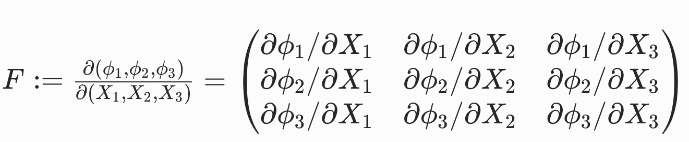
变形函数与变形梯度举例：
| 形变 | 变形函数ϕ | 变形梯度F |
|---|---|---|
| 平移 | x =ϕ( X )= X + t | F=∂ϕ( X )/∂ X =I |
| 均匀缩放 | ϕ( X )=γ X | F=γI |
| 各向异性缩放 | ϕ( X )=S X | F=S |
| 旋转 | ϕ( X )=RX | F=R |
应变能与超弹性
弹性变形会积累势能，该势能被称为应变能，用E[ϕ]表示。
应变能仅与最终的变形形态有关，而与弹性体达到该构形的时间变形路径无关。这是超弹性材料的标志性特征。
弹性体不同部位的变形程度存在差异，因此，变形与应变能的关系更适合在局部尺度上定义。因此引入能量密度函数Ψ[ϕ;X]。
Ψ[ϕ;X]用于度量物质点X周围微元域dV内，单位未变形体积的应变能。
对能量密度函数在整个体积域 Ω 上积分，即可得到弹性体的总应变能：

由于能量密度Ψ[ϕ;X]定义在X的局部域上，因此可通过一阶泰勒展开对该微小区域的变形映射进行合理近似：
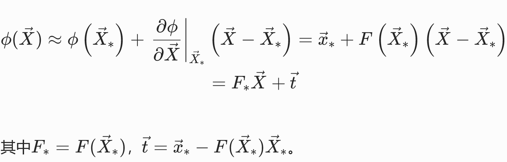
其中t对能量不影响，因此能量密度仅为局部变形梯度的函数。但Ψ(F)的具体形式与材料特性有关。
能量密度函数一个自然的期望性质是下有界，即存在最小能量状态，弹性体可稳定于该状态。
能量密度函数举例：
| 能量密度函数 | 稳定状态 | 特点 |
|---|---|---|
| 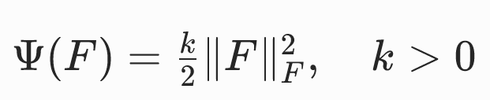 | F=0，ϕ(X)=常数 | 所有物质点都有收缩至同一点的趋势。 不符合自然规律，因为参考构形 Ω 并非其平衡构形。 |
 | F=I，ϕ(X)=X） | 处于参考构形或其恒定平移构形时，能量取得最小值。但旋转状态下的能量非零。 |
力（Force）与面力（Traction）
力密度，为物质点X周围微元域内，单位未变形体积的力。
对应的：面力密度函数traction(X)，用于度量弹性体边界上物质点X周围微元域内，单位未变形面积的力。
对有限边界区域B⊂∂Ω积分，即可得到该边界区域的总作用力：
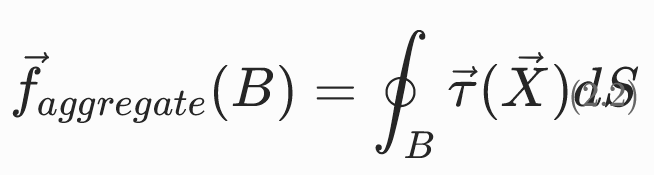
应力张量
The First Piola-Kirchhoff 应力张量
定义：
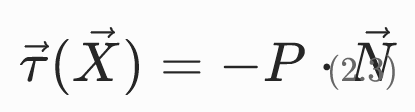
其中N为参考构形（未变形）中边界的单位外法向量。
对于超弹性材料，P仅为变形梯度的函数，且与应变能存在简单的关系：
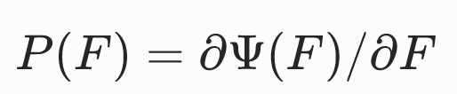
因此任意给出Ψ(F)或者P(F)中的一个，即可根据F得出traction τ ( X )
应力张量使用举例
定义：
可以推导出：P=∂Ψ/∂F=k(F−I)
考虑弹性体沿所有方向均匀拉伸 2 倍的情况，ϕ( X )=2 X时，F=2I，P=kI，τ =−k N，该边界力会使弹性体产生向内的运动，以恢复原始的形状和体积。
材料本构模型
对材料物理特性的数学描述被称为本构模型，其中包含将外界激励（如变形）与材料响应（如力、应力、能量）关联起来的方程。
基于F的本构方程
将Ψ与F（或P与F）关联的显式公式完全可作为本构方程，例如：
但直接利用矩阵F的元素分析变形的类型和程度非常不直观，通常会定义一些由F推导得到的中间量来定义本构方程。
中间度量
应变度量（Strain measures）
应变度量是用于定量描述变形程度的物理量，即衡量当前构形与静息构形的偏离程度。
应变度量由变形梯度推F导得到，保留变形梯度中与变形程度评估相关的信息，同时舍弃变形梯度中与形状变化无关的信息。
格林应变张量
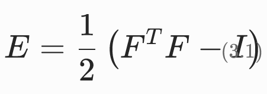
特点：
- 当弹性体处于参考构形（ϕ(X)=X）时，F=I，因此E=0；
- 当弹性体仅发生旋转和平移（形状不变）时，ϕ(X)=RX+t（R为旋转矩阵），此时F=R，由于RTR=I，因此E=0。
- 对于更一般的非刚体运动，可以将F分解为F=RS，此时
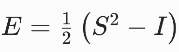
优点：
- 舍弃了与变形程度无关的旋转自由度，仅保留了对称因子S中包含的拉伸 / 剪切信息，且该过程无需显式进行极分解。
缺点：
- 格林应变张量是变形的非线性（二次）函数，因此基于格林应变张量构建的本构模型复杂度更高。
- 离散化后的节点力将是节点位置的非线性函数。
小应变张量
E(F)在E(I)处泰勒展开，并代入E(I)=0，得：
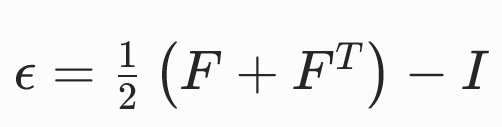
优点：
- 计算效率高
- 离散化后的节点弹性力与节点位置呈线性映射关系
缺点：
- 小应变张量仅能可靠地度量小变形。若用于大变形场景，将产生明显的误差。
共旋应变张量

不变度量
各向同性不变量
$$ I_1(F) = tr (F^TF) $$
I1是F的各奇异值的平方和
体积比不变量J
$$ J = \det F $$
J的物理意义：变形引起的体积变化比。
本构模型
基于线性弹性（Linear elasticity）张量的本构模型


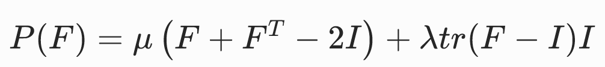
优点：
- 应力P是变形梯度F的线性函数，因此节点弹性力与节点位置呈线性关系。
- 与其他非线性材料模型相比，线弹性模型的计算成本显著更低。
- 在小变形场景下准确
缺点：
- 仅在小变形场景下准确，因此仅适用于运动幅度较小的情况。
基于格林应变张量的圣维南 - 基尔霍夫模型
将小应变模型中的ϵ（E的近似）替换为E
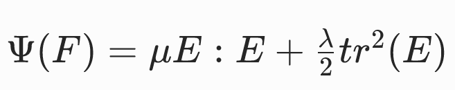
可求得
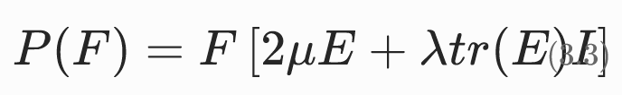
特点：
- 旋转不变性
- 非线性关系：应力是变形梯度F分量的三次多项式函数；离散化后，节点力也将表示为节点位置的三次多项式。
- 压缩缺陷：对强压缩的抵抗性较差。当弹性体受到强压缩力或运动学约束时，容易发生局部的扭曲和翻转。
基于共旋应变张量的共旋线性弹性模型
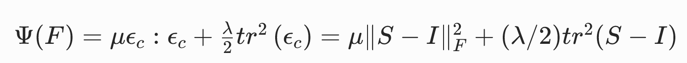
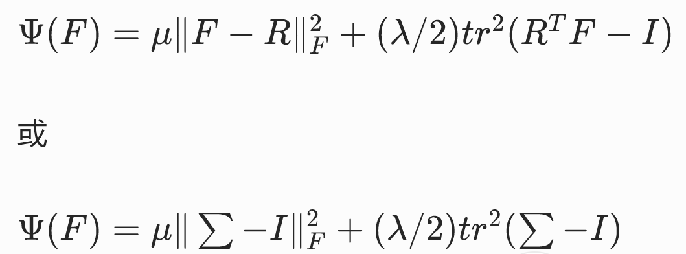
这三种写法的是等价的。

特点：
- 极分解的计算成本，以及在部分仿真中需要使用非线性求解器的成本。
- 相较于圣维南 - 基尔霍夫等高度非线性模型，其计算效率仍有显著优势。
新胡克弹性
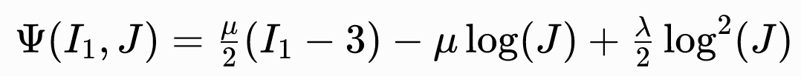
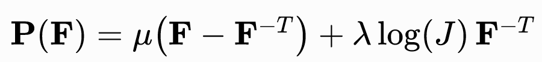
特点：
- 对极端压缩具有极强的抵抗效应。
- 近似不可压缩材料，实现保体积的数值格式。
- 当模拟中意外出现体积反转构型（理论上物理上不可能但实际仿真中极易发生）时，模型没有内置的稳定处理机制。
本文出自CaterpillarStudyGroup，转载请注明出处。
https://caterpillarstudygroup.github.io/GAMES103_mdbook/